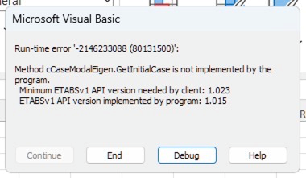

Release Notes |
This topic contains the following sections:
Update to .NET Standard 2.0
With the release of ETABS v22.0.0, the API is compiled as a .NET Standard 2.0 AnyCPU dynamic link library (DLL) and supports an increased range of 32-bit and 64-bit API clients targeting .NET Framework 4.6.1 and newer (including the latest - 4.8.1), .NET Core/.NET 2.0 and newer (including the latest - 8.0), along with clients accessing the API via COM. While the file version of the library has been incremented to 2.0.0 , the name of the library remains the same, ETABSv1.DLL, and source code compatibility with earlier versions is preserved.
Most API developers should be able to update their client applications to reference the latest API without significant disruption, and are encouraged to do so for maximum compatibility with old, current, and future versions of ETABS. Please refer to the provided examples to see if your client application requires any code changes.
Forward Compatibility
.NET based client applications referencing older versions of the API library (file version < 2.0.0) will no longer work with ETABS v22.0.0 and newer. Client applications acccessing the API via COM will continue to work. API developers are encouraged to update their clients to reference the latest API for maximum compatibility with old, current, and future versions of ETABS.
Backwards Compatibility and Error Handling
.NET based client applications referencing the latest version of the API library and client applications accesing the API via COM are both expected to work with old, current, and future versions of ETABS and API developers are encouraged to update their clients to reference the latest API.
Client applications that use the new API library will also benefit from improved error handling. When trying to use a function that is not supported in the version of ETABS to which they are connected, a catchable exception with an informative error message will be thrown:

Remote API Disabled
The Remote API feature, used to start and/or connect to a running instance of ETABS on a Remote Computer, has been disabled with the release of ETABS v.22.0.0 . This functionality may be added back to the program in a future release. Please refer to the page, Breaking changes in v22.0.0
ETABSv1.DLL
Beginning with Version 18 of ETABS, the API library no longer has the program version as part of its name. So, while the name of the API library for ETABS version 17 was ETABSv17.DLL , the name of the API library for ETABS version 18 is ETABSv1.DLL . The name of the API library will remain ETABSv1.DLL , even as new major versions of ETABS are released. A new API function, cHelper.GetOAPIVersionNumber , has been added. This API version number will increment as new API functions are added, but the API library name will remain ETABSv1.DLL .
Once users reference the new ETABSv1.DLL in their client applications, they will no longer need to update with every major release. The ETABSv1.DLL reference in their client application will automatically use the latest edition of ETABSv1.DLL that is registered with each product installation. Even so, developers should always use cHelper.GetOAPIVersionNumber to check which version of the API library they are using.
CSiAPIv1.DLL
Beginning with Version 18 of ETABS, a new API library, CSiAPIv1.DLL, has been introduced. This library is compatible with SAP2000, CSiBridge, and ETABS. It will be available with all new versions of each product. Developers can now create API client applications that reference CSiAPIv1.DLL , and connect to either SAP2000, CSiBridge, or ETABS, without any code changes required. Similar to the new ETABSv1.DLL , the assembly name CSiAPIv1.DLL will not change, even as new major versions of SAP2000, CSiBridge, and ETABS are released. CSiAPIv1.DLL also exposes cHelper.GetOAPIVersionNumber , which should be used by developers to check which version of the API library they are using. As the version increases and new functionality is added, compatibility with previous versions will be preserved, and client applications will not require recompilation.
The latest version of CSiAPIv1.DLL included with ETABS version 18 is strong-named, making it incompatible for .NET clients developed with previously released versions of CSiAPIv1.DLL that were released with SAP2000 or CSiBridge v21.0.0 - v21.0.2 . .NET clients that reference previous versions of CSiAPIv1.DLL can be recompiled with the latest assembly included with ETABS version 18 in order for the client to be compatible with all products.
Interactive Database
A powerful new feature, the Interactive Database, has been added to the API in ETABS version 18. This feature allows the API user to retrieve all available data in the program, including analysis and design results. It also allows the user to set nearly all model parameters programmatically. Please refer to the page, Database Tables for Editing and Display
Attaching to a Running Instance
API client applications can connect to a manually started instance of ETABS. Please refer to the page, Attaching to a Manually Started Instance of ETABS
ETABSv17 Deprecated
ETABSv17, ETABS 2016, ETABS 2015 and ETABS 2013 are no longer supported. It is recommended that all client applications be upgraded to reference the latest version of ETABSv1.DLL or CSiAPIv1.DLL .